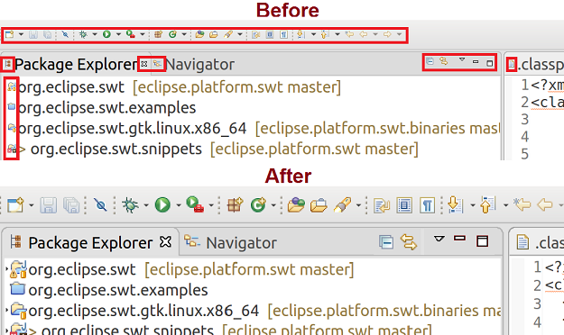

javax.annotation package.
The Eclipse runtime will resolve all components to the same version (JVM or provided by the Eclipse platform).
This avoids a common error in Eclipse RCP implementations in which @PostConstruct
was resolved to different classes in the bundle classpath.
This change is backwards compatible, i.e., a dependency with a minimum version still works correctly.
ComputedValue is able to compute custom values from other tracked getters inside its calculate method.
Before this change you had to derive from ComputedValue, but the new create method, which expects a Supplier<T>
allows you to create an instance of it by using a lambda expression.
E.g,
IObservableValue<Integer> listSizeObservable = ComputedValue.create(() -> observableList.size());or
IObservableValue<String> fullNameObservable = ComputedValue.create(() -> personFirstNameObservable.getValue() + " " + personLastNameObservable.getValue());
More details about tracked getter can be found in the ObservableTracker's getterCalled(IObservable) method. Almost every IObervable's get methods are tracked getter.
Refer, below screen-shot showing Eclipse icons 'Before' and 'After' SWT autoScale feature: 
Note: By default, autoScaling is enabled on Windows, GTK and Mac Cocoa.
This feature can be disabled on Windows & GTK by setting this VM argument to 'false' in eclipse.ini or Run-configuration:
-Dswt.enable.autoScale=false
Autoscaling cannot be disabled on Mac as it is provided by the OS.
setCloseable method on a MPart instance will
now change the visibility of the close button for the corresponding part.

UIEvents.UILifeCycle.APP_SHUTDOWN_STARTED event will be fired now.
Previously, this only worked for Eclipse RCP applications running in the compatibility mode and mixed mode applications, which use both Eclipse 3 and 4 API.


On GTK+ this key binding was previously assigned to the Display command as a workaround for Ctrl+Shift+D not working.
The basic concepts had already been documented in the online help, but not all that was documented was actually checked by JDT's null analysis. With the changes outlined below, null analysis based on type annotations is even more capable than previous versions.
(1) The first batch of contributed improvements implements what we call "pessimistic analysis for free type variables", which affects implementors of generic types.

In order to allow clients to instantiate such a generic class with either a @NonNull or a @Nullable type
as substitution for the "free type variable" <T>, the implementation of that class must account for the worst in both directions:
- To anticipate a
@NonNulltype, each field typed to a free type variable must be initialized with a non-null value, and passingnullwhereTis expected is illegal - To anticipate a
@Nullabletype, each dereference must be preceded by a null check.
At the bottom of each problem hover you will find a link to the corresponding configuration option, should you like to change the severity of this diagnostic. Note that configurability is mainly given for smooth migration from previous JDT version; conceptually, problems detected by pessimistic analysis should be treated as errors, because they invalidate the null-guarantees given by a generic type.

(2) The second improvement concerns consumption of generic types from a library, more specifically:
invocations of library method whose return type is given by a free type variable.
If the library type is instantiated with a @NonNull type as the type argument,
we generally want to interpret the mentioned return type as non-null, too.
This is problematic only for some "legacy" methods, which may return null without declaring so.
The most prominent example is java.util.Map.get(K) (see also the news entry on
external annotations,
which also demonstrates the clean solution to this issue).
The analysis cannot see whether absence of a null annotation for such a return type is intentional (in the above sense of "free type variables"), or an omission that should be fixed. For that reason a new warning has been implemented to alert about this situation.

In the above example, both fields list and map provide @NonNull String as a
type argument, hence the return types of both get methods are interpreted as non-null.
For List this is desired, for Map it is a bug.
The dilemma can be resolved by adding a (possibly empty) external annotation file (.eea)
to each affected library class. By using an empty annotation file, the user signals that all types
in this class should be interpreted verbatim (like in the List case - use with care).
In the other case the missing @Nullable annotation should be added as an external annotation
(like in the Map case).
In a project that is not yet configured to use external annotations for the library in question, the warning is demoted to level "information". Generally, the severity of this problem is configured using the option right below the one mentioned above, titled Unsafe '@NonNull' interpretation of free type variable from library.
(3) Finally, a small utility class, org.eclipse.jdt.annotation.Checks,
has been included in the bundle org.eclipse.jdt.annotation_2.1.0
containing helper methods for typical idioms for improving and documenting null safety.
(1) In the Line Wrapping section you can control wrapping policy of 'for' loop headers.

(2) The Align fields in columns feature in the Indentation section can now be configured to recognize groups separated by empty lines and align them independently.

(3) In the New lines section you can control if new lines should be added after annotations on enum constants.


When enabled, PDE automatically generates and updates Declarative Services component descriptor files from appropriately annotated Java source. This is done without requiring any additional builder to be configured in your project.
When you annotate your component implementation classes with @Component, and any
reference bind methods with @Reference, PDE will validate your annotations
and generate the corresponding component descriptor files. Any errors discovered during validation
are highlighted and reported.

In addition, PDE will also maintain the project's MANIFEST.MF and build.properties file -- generated component descriptor files are automatically added to the manifest and included in the build.
To enable this feature in your workspace, go to Preferences > Plug-in Development > DS Annotations and check Generate descriptors from annotated sources.
Instead of creating a Component Definition file for each component class and adding it to the manifest and build.properties, the wizard creates component classes annotated with the appropriate DS annotations, which are then used by PDE to automatically generate the corresponding component descriptor files.


Image#getImageDataAtCurrentZoom(): ReturnsImageDataat current OS zoomImage#getBoundsInPixels(): Returns image bounds in pixels
The javadoc of the below Image APIs have been updated in the context of High-DPI support:
Image#getImageData()- ReturnsImageDataat 100% OS zoomImage#getBounds()- Returns image bounds at 100% OS zoom
Note: Clients should use getImageDataAtCurrentZoom() instead of getImageData()
to enable their applications to render correctly and efficiently on High-DPI monitors.
Link#setLinkForeground(Color) has been added in SWT to set the
foreground color of the hyperlink text in a Link widget.
The corresponding getter Link#getLinkForeground() has been added which returns
the foreground color of the hyperlink text in the Link widget.
For an example, see Snippet182.